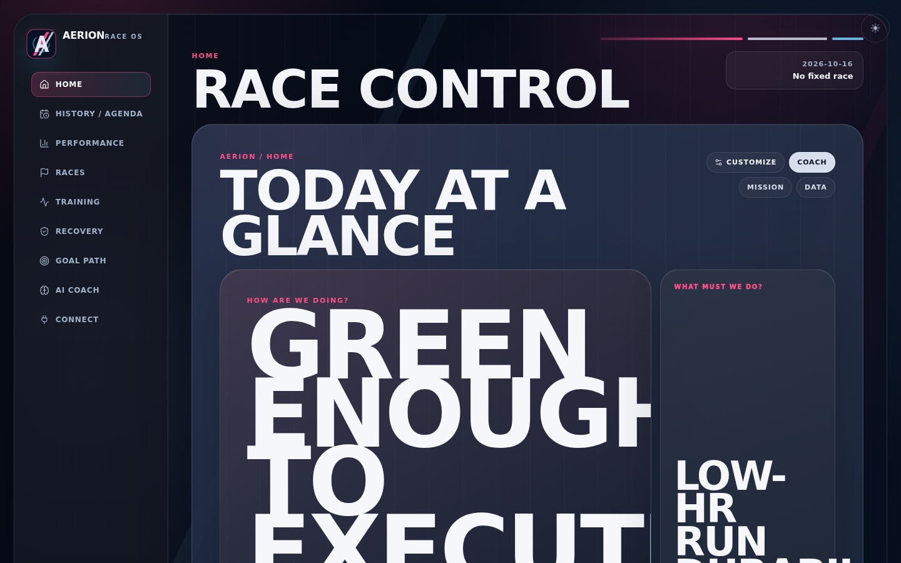
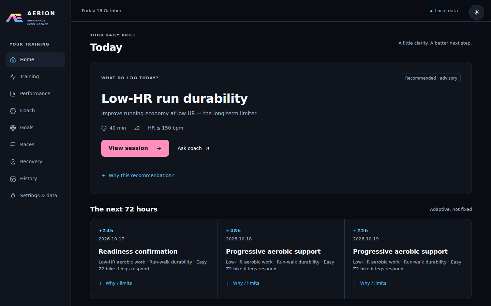
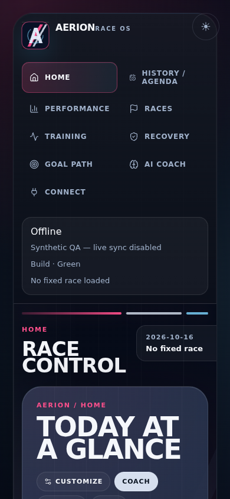
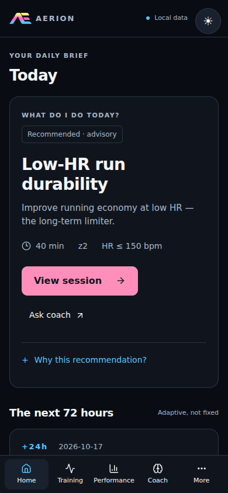
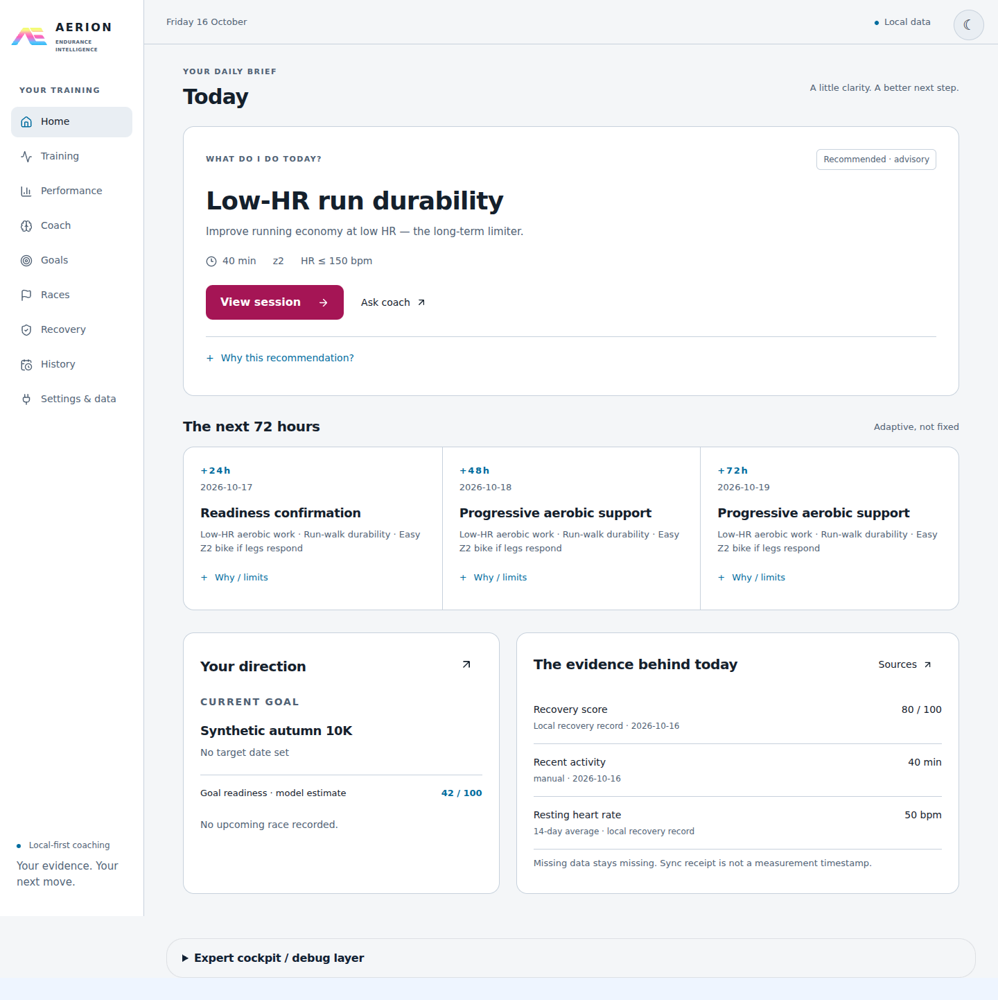

Synthetic QA data only · 16 October 2026 · Identical records and viewport sizes. No concept renders.





Browser QA is now reproducible with npm run qa:browser. Per-field recovery provenance and external snapshot-client migration remain separate open integration items.